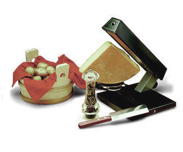

Raclette
5 von 6Pro Person zwischen 200 und 250g Käse aufschneiden und mit Gürkli, Silberzwiebeli, Champignons etc. servieren.

Pro Person zwischen 200 und 250g Käse aufschneiden und mit Gürkli, Silberzwiebeli, Champignons etc. servieren.

Montagsplausch Nr. 179.